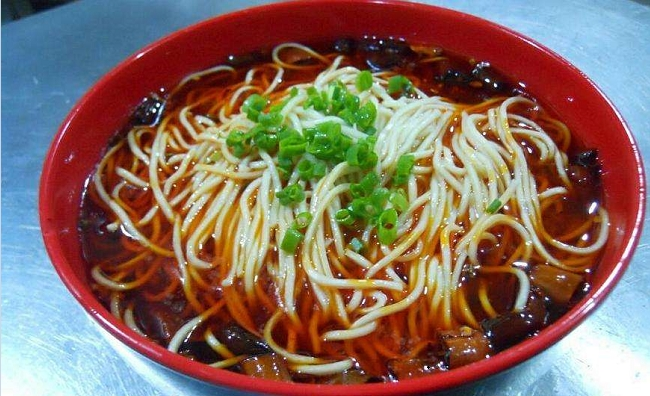
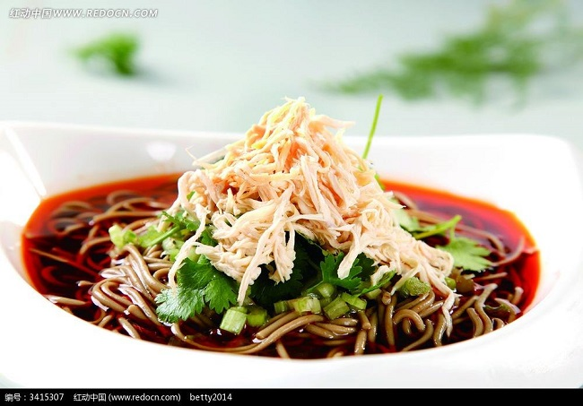

切换城市
北京
上海
深圳
广州
更多>>
Hi,星空下的橡皮人
最近浏览
关注
收藏
帮助
探索
失传菜谱
御膳房
FOODSLAVES
搜索
欢迎
首页
中华料理
外国料理
健康饮食
中华菜系
川菜
粤菜
湘菜
东北菜
鲁菜
清真菜
湖北菜
浙菜
家常菜谱
家常菜
凉菜
素食
晚餐
私家菜
热菜
海鲜
早餐
晚餐
午餐
各地小吃
四川小吃
广东小吃
北京小吃
陕西小吃
沙县小吃
中华菜系
川菜
粤菜
湘菜
东北菜
鲁菜
清真菜
外国菜系
韩国料理
日本料理
法国料理
意大利餐
各地小吃
四川小吃
广东小吃
北京小吃
陕西小吃
饮食健康
饮食小常识
美容瘦身
食谱安全
养生妙方
饮食禁忌
中医保健
功能性调理
清热去火
减肥
祛痰
乌发
滋阴补肾
健脾开胃
疾病调理
糖尿病
高血压
通风
胃炎
痔疮
更年期
热门推荐

宫保鸡丁
评分：9.0
难度系数：5

蛋炒饭
评分：9.0
难度系数：5
青椒肉丝
评分：9.0
难度系数：5
白菜炒肉
评分：9.0
难度系数：5
回锅肉
评分：9.0
难度系数：5
重庆小面
评分：9.0
难度系数：5
地图搜索
起始位置：
终点
查询